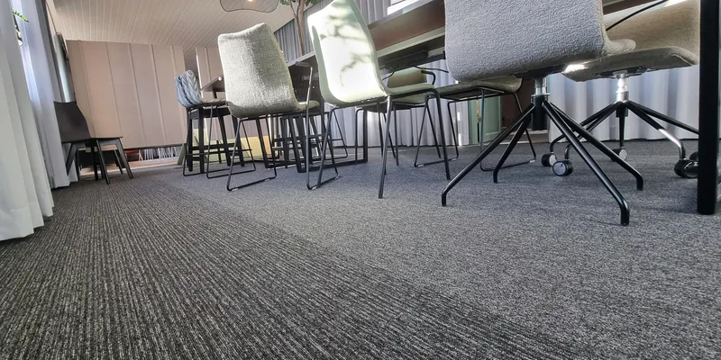
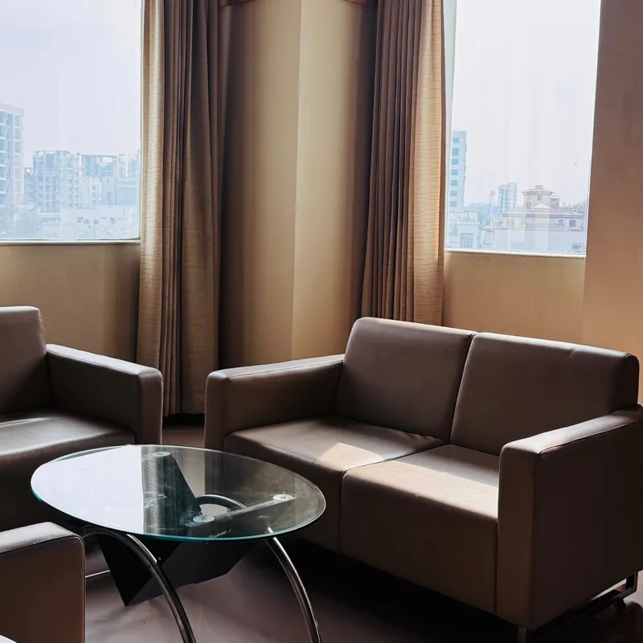

Professionnels · Sièges et moquette
Nettoyage de sièges et de moquette de bureaux à Toulouse
Chaises de bureau, fauteuils et canapés d'accueil, moquette : le textile de vos locaux est nettoyé sur place, en profondeur, sans rien emporter. Devis gratuit après visite.

Pourquoi faire nettoyer vos sièges et votre moquette
Des sièges qui font propre
Sur une chaise de réunion ou un fauteuil d'accueil, une trace de café ou une assise ternie se voit tout de suite.
Moins d'odeurs
Le tissu et la moquette gardent les odeurs de repas, de café et de passage. Un nettoyage en profondeur va les chercher dans la fibre, là où l'aspirateur ne va pas.
Avant de remplacer
Changer des chaises ou une moquette coûte cher. Un nettoyage en profondeur leur redonne souvent un bel aspect.
Ce qui est compris
- Chaises de bureau et de réunion en tissu
- Fauteuils et canapés d'accueil, en tissu ou en cuir
- Moquette des bureaux, des salles de réunion et des couloirs
- Tapis d'entrée et tapis de bureau
- Aspiration puis pré-traitement des taches
- Cuir et simili, avec un produit adapté
- Passage ponctuel ou régulier, à un rythme fixé avec vous
À savoir
- Certaines taches anciennes (encre, teinture) peuvent rester atténuées. Nous vous le disons franchement à la visite.
- Le nettoyage ne répare ni l'usure, ni une brûlure, ni un tissu décoloré.
Comment ça se passe
- 1
Nous visitons vos locaux
Nous regardons les surfaces, les accès et ce que vous attendez. La visite ne vous engage à rien.
- 2
Vous recevez un devis gratuit
Le prix annoncé est celui que vous payez. Passage ponctuel ou régulier : vous choisissez le rythme.
- 3
Nous intervenons
Avant l'ouverture ou après la fermeture, entre 7 h et 22 h 30, tous les jours sauf le vendredi.
- 4
Vous recevez la facture
Un passage ponctuel se règle à réception de la facture. Un contrat régulier donne une facture par mois.
Questions fréquentes
Nettoyez-vous les sièges en cuir ou en simili ?
Oui, avec un produit adapté au cuir et au simili.
Faut-il vider les bureaux pour la moquette ?
Non. Il suffit de libérer le sol des objets posés dessus (cartons, sacs, corbeilles). Les bureaux et les armoires restent en place : nous nettoyons autour.
Venez-vous avec le matériel ?
Oui, nous venons avec notre matériel et nos produits. Vous n'avez rien à prévoir, sauf de libérer le sol.
Combien coûte le nettoyage des sièges et de la moquette ?
Le prix dépend du nombre de sièges, de la surface de moquette et de leur état. Il est fixé dans le devis gratuit remis après la visite, et c'est celui que vous payez.
Zone d'intervention
Nous intervenons à Toulouse (tous quartiers) et dans les communes proches : Blagnac, Colomiers, Tournefeuille, Cugnaux, Portet-sur-Garonne et Muret. Voir la zone d'intervention.
Nos autres services aux professionnels
Vous êtes un particulier ? Voir nos prestations pour les particuliers.
Parlons de vos locaux
Écrivez-nous sur WhatsApp ou appelez-nous pour fixer la visite de vos locaux.